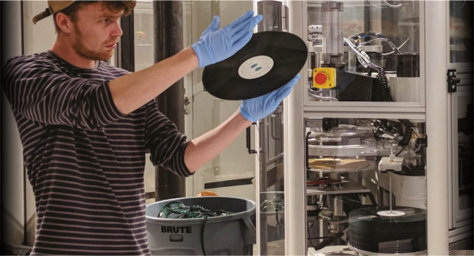

El vinilo está de vuelta, pero el formato tiene un costo ambiental serio. A medida que el mundo de la música dance intenta ser más ecológico, algunas compañías están buscando formas de hacer que nuestra obsesión por la cera sea lo más ecológica posible: hablamos con el jefe de uno de estos fabricantes, Deep Grooves Pressing Plant, para obtener más información.
Marcelo RuffinoNov 10th, 2019
Desde los viajes de los apostadores y artistas de gira, hasta el consumo de plástico en clubes nocturnos y festivales, hasta la producción de equipos y música física, es justo decir que la industria de la música no es la más ecológica. Un informe de Powerful Thinking en 2016, por ejemplo, mostró que solo los festivales de música británicos producen 23,500 toneladas de desechos, usan cinco millones de litros de combustible y tienen emisiones de CO2 de casi 20,000 toneladas cada año, y los festivales solo han crecido en número y tamaño. Desde entonces, aquellos en la industria no son conscientes de su huella, y constantemente se están haciendo cambios para mejorar.
A-Trak, Jamie Jones, Lauren Flax, Louisahhhh y Soul Clap entre sus embajadores, la organización DJs For Climate Action alienta a los artistas a usar su arte y su influencia cultural para provocar respuestas y crear conciencia sobre el cambio climático. Este año, los clubes de Londres, The Pickle Factory y Oval Space, se convirtieron en los primeros en la capital en ser 100% libres de plástico, desechando todas las botellas, tazas e incluso pulseras no reciclables, en favor de alternativas ecológicas. Y los promotores de eventos internacionales Live Nation también prometieron que cinco de los festivales más grandes del Reino Unido (Download, Latitude, Leeds, Reading e Wireless) estarán libres de plástico para 2021. Sin embargo, un brazo de la industria que a menudo se pasa por alto en términos de impacto ambiental, es la fabricación y distribución de lanzamientos en formatos físicos. Se vendieron 4,2 millones de álbumes de vinilo solo en el Reino Unido en 2018, un aumento del 1,6%, o 100.000 ventas adicionales, a partir de 2017.
También se vendieron 35.000 cintas de casete en el período de seis meses a principios de 2019, que es casi el doble los 18,000 que se vendieron entre enero y junio de 2018. El aumento en las ventas significa un aumento en la producción, y la producción de ambos formatos físicos es un proceso en gran medida perjudicial. Cuando se trata específicamente de la producción de vinilo, cada etapa de la meticulosa El proceso es dañino. El combustible fósil, el petróleo crudo, se extrae de fuentes limitadas en el suelo, se refina y procesa en granulado de PVC, el material del que está hecho su vinilo estándar. El color negro típico del vinilo se deriva del negro de carbón, un subproducto de la quema de sustancias de petróleo como el alquitrán. Los estudios de profesores y otros profesionales calificados estiman que tenemos alrededor de 50 años hasta que se agoten todas las fuentes de combustibles fósiles, y aunque podemos usar alternativas, los combustibles fósiles son irremplazables.